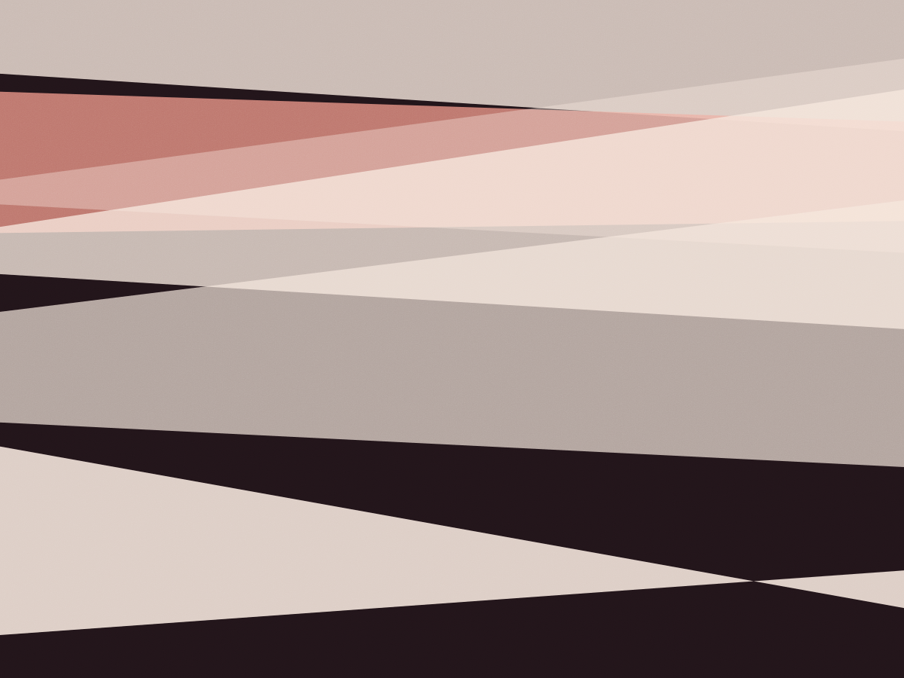
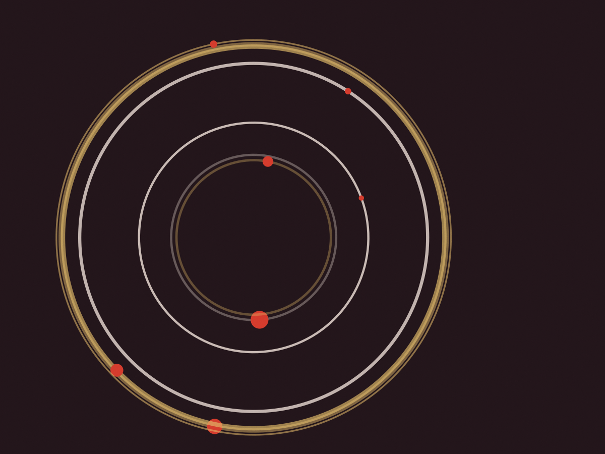

Sem queijo
Marinara
Tomate italiano amassado na mão, alho laminado, orégano e azeite. É a pizza que a gente usa para testar a massa nova.
R$ 54

Alto de Pinheiros · terça a domingo
Abrimos às 18h e fechamos quando a bola de massa acaba: 22h30 durante a semana, meia-noite na sexta e no sábado. Nove mesas, sem reserva, e retirada no balcão. Pizza a partir de R$ 62.
Sem delivery e sem taxa de serviço. A fila começa na calçada da Pio XI e o nome fica anotado no caderno do balcão.
Todas têm 32 cm e saem da mesma bola de 250 g. Não fazemos meia a meia, e a borda é sem recheio: é a parte que mostra se a fermentação foi bem feita.
Sem queijo
Tomate italiano amassado na mão, alho laminado, orégano e azeite. É a pizza que a gente usa para testar a massa nova.
R$ 54
A mais pedida
Molho de tomate, mussarela de búfala em lascas grossas, manjericão fresco depois do forno e um fio de azeite.
R$ 62
Da casa desde 2016
Calabresa artesanal de Porangaba, cebola roxa em pétalas e azeitona preta. Sem queijo extra.
R$ 68
Com ovo
Presunto cru, ovo caipira, cebola, ervilha fresca e azeitona. O ovo entra nos últimos 20 segundos de forno.
R$ 72
Sem molho
Mussarela, gorgonzola, provolone e parmesão de 24 meses ralado na hora. Base de creme de leite, não de tomate.
R$ 76
Do caderno de 2018
Linguiça de porco esfarelada, cebola caramelizada com açúcar mascavo e uma pimenta calabresa por cima.
R$ 74
Só 12 por noite
Burrata de 125 g colocada depois do forno, tomate confit em azeite com alho e manjericão. A massa vai só com sal.
R$ 88
Doce ou de entrada
Pera em fatias finas, gorgonzola dolce e nozes tostadas na própria pedra antes de montar.
R$ 78
A pedra fica a 430 graus e cada pizza assa em 90 segundos, girando uma vez na metade do tempo. Acabou a bola da noite, acabou o serviço.
24 h
Farinha tipo 00, 62% de água, 2,8% de sal e 0,4 g de fermento fresco por litro. Descansa em caixa fechada, na bancada fria a 18 graus.
24 h
Dividida à mão, sem cilindro. Cada bola descansa mais um dia na caixa, e é aí que a borda cresce.
90 s
Pedra a 430 graus, lenha de eucalipto seca por oito meses. Uma volta na metade do tempo e a pizza sai com a borda leopardo.
| Dia | Abre | Última fornada |
|---|---|---|
| Terça a quinta | 18h | 22h30 |
| Sexta e sábado | 18h | meia-noite |
| Domingo | 18h | 22h |
| Segunda | fechado | fechado |
Massa que sobra vai para a focaccia do dia seguinte. Nunca congela.
A casa fica na Rua Pio XI, 1.180, no Alto de Pinheiros, num sobrado de esquina com a fachada pintada de vermelho-tijolo. O forno foi construído em 2016 pelo mesmo pedreiro que fez o da casa antiga, em Perdizes.
São nove mesas de dois e quatro lugares, mais quatro bancos no balcão de mármore. Não aceitamos reserva: quem chega anota o nome e espera na calçada, com um copo de chope se quiser.
A retirada acontece no balcão da porta lateral. A pizza vai em caixa de papelão com furo de respiro, e a gente explica como reassar em casa antes de você sair.

“Cheguei 18h10 numa quarta e a marinara já tinha acabado. Voltei na quinta às 18h em ponto: a borda inflada, o fundo sem queimar embaixo. Passou a ser a minha terça-feira.”
Bruno Salla, 34 anos, designer. Cliente desde 2020.
“Levo para casa e reasso na frigideira por dois minutos, como o pessoal do balcão ensinou. A borda volta a ficar crocante, e é isso que eu conto para todo mundo.”
Marina Ok, 29 anos, jornalista. Cliente desde 2022.
“Perguntei da fermentação e o dono me mostrou o caderno com a contagem de bolas por dia. Fiquei fã antes de provar a primeira fatia.”
Henrique Prado, 41 anos, padeiro. Cliente desde 2019.
O telefone abre às 17h30. A pizza fica pronta em 12 minutos e espera até 20 minutos depois do horário combinado.
Diga a pizza e o nome. A gente confirma quantas bolas ainda restam antes de fechar o pedido.
No balcão lateral, na Rua Pio XI. Não tem estacionamento próprio: a vaga é na rua, em zona azul até as 22h.
Frigideira seca, fogo alto, dois minutos com a tampa. Ou forno doméstico a 250 graus por quatro minutos, na grade.